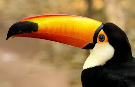
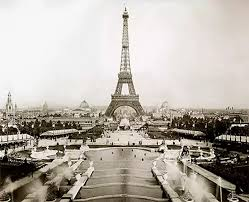

um animal muito conhecido mundialmente, ainda mais no Rio de Janeiro
um animal conhecido e amado é nosso famoso Panda

A cidade que muitos amam, Santa Catarina, uma foto de umas das diversoes que a maioria dos visitantes vão é o Bondinho

A cidade que existe morros,festas e muitos FAMOSOS morram lá

E também existe fotosgrafias que são incrivelmente tiradas no tempo certo

E essa foto antiga é por ter sido tirada de uma camera muito antiga